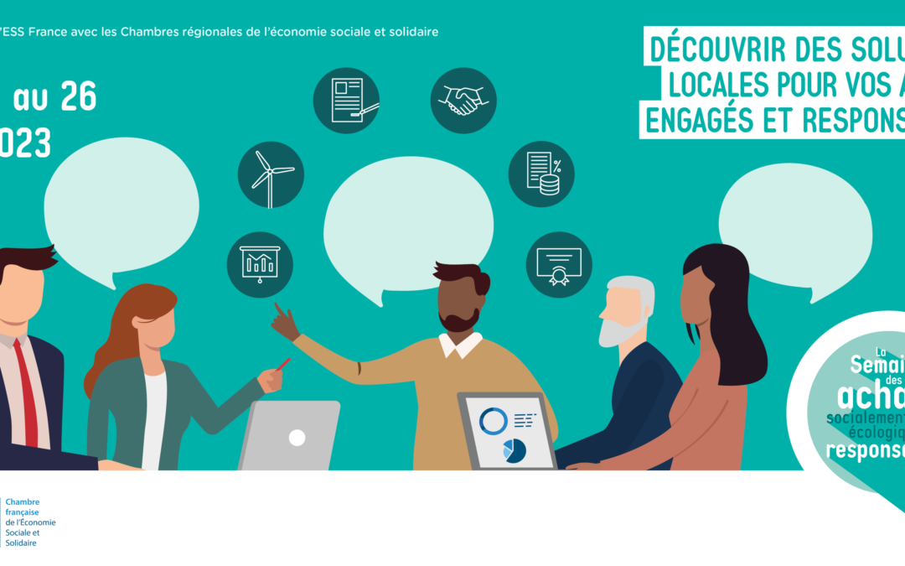

Appels à projets, news, News importante
MÉTIERS DE DEMAIN 2023Depuis 2012, la Fondation Orange s’est engagée dans une démarche ambitieuse autour de l’éducation numérique pour donner de nouvelles chances à des jeunes en insertion sociale et professionnelle. C’est pourquoi, la Fondation Orange lance le 2ème...

Conseil du mois, news, News importante
La commande publique, bien loin de simplement permettre à la puissance publique d’effectuer ses achats de biens et services, est un outil traduisant certaines ambitions et projets de société : la commande publique peut notamment constituer un outil de transitions,...

Conseil du mois, news, News importante
Comment l’ESS peut-elle contribuer à une politique d’achat responsable et durable, depuis sa conception jusqu’à sa mise en œuvre ? Visioconférence de lancement de la semaine ASER lun. 22 mai, 14:00 – 15:30 Événement en ligne Détails Les...